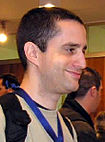

php
PHP is a popular general-purpose scripting language that is especially suited to web development[5]. It was originally created by Rasmus Lerdorf in 1994;[6] the PHP reference implementation is now produced by The PHP Group.[7] PHP originally stood for Personal Home Page,[6] but it now stands for the recursive initialism PHP: Hypertext Preprocessor.[8]
php
| PHP 3 and 4 |
May 22, 2000 |
PHP 5 |
July 14, 2004 |
PHP 6 and Unicode |
March 2010 |
PHP 7 |
14 July 2014 |


who made php ?
PHP development began in 1994 when Rasmus Lerdorf wrote several Common Gateway Interface (CGI) programs in C,[17][18][19] which he used to maintain his personal homepage. He extended them to work with web forms and to communicate with databases, and called this implementation "Personal Home Page/Forms Interpreter" or PHP/FI.
PHP/FI could be used to build simple, dynamic web applications. To accelerate bug reporting and improve the code, Lerdorf initially announced the release of PHP/FI as "Personal Home Page Tools (PHP Tools) version 1.0" on the Usenet discussion group comp.infosystems.www.authoring.cgi on June 8, 1995.[20][21] This release already had the basic functionality that PHP has today. This included Perl-like variables, form handling, and the ability to embed HTML. The syntax resembled that of Perl, but was simpler, more limited and less consistent.[7]